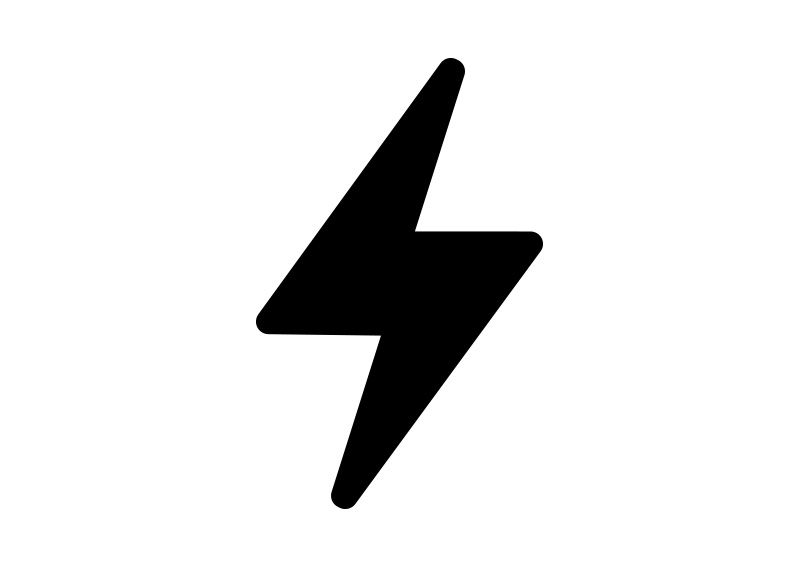

Adequate water supply means a water supply which has a well yield and the pump capacity to provide the quantity and quality, where obtainable, according to s. NR 812.06, of water necessary for human or sanitary use, or for the preparation of food products and other purposes for which the water is intended to be used.

Assured Electricty Supply
Assured electricity supply is one of the core infrastructure elements of a Smart City along with water supply, sanitation, robust IT connectivity, public transport etc. In 2015, Govt of India announced a list of 100 smart cities.
Smart Living
A smart home's devices are connected with each other and can be accessed through one central point—a smartphone, tablet, laptop, or game console. Door locks, televisions, thermostats, home monitors, cameras, lights, and even appliances such as the refrigerator can be controlled through one home automation system.
Smart Healthcare
Smart healthcare is a health service system that uses technology such as wearable devices, IoT, and mobile internet to dynamically access information, connect people, materials and institutions related to healthcare, and then actively manages and responds to medical ecosystem needs in an intelligent manner.